Hirel 2010, fête du CVCF (33 ans !)

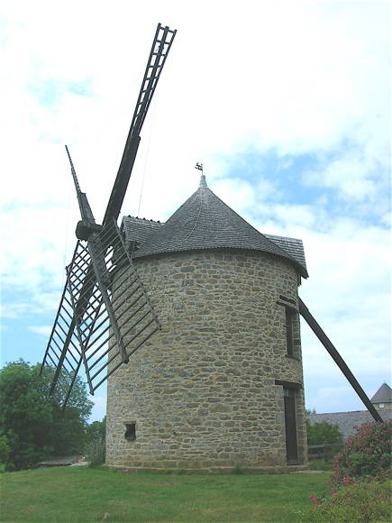
Je suis parti tôt, autoroute, j'ai droit à un petit arrêt-délassement, au Mont-Dol, ce rocher à la situation identique au Mont-St-Michel, mais dans les terres ! Le moulin se maintient bien, depuis sa restauration. On peut le visiter, mais je l'ai déjà fait en 2006. La tour est fermée cause travaux de rajeunissement sur la statue du haut...

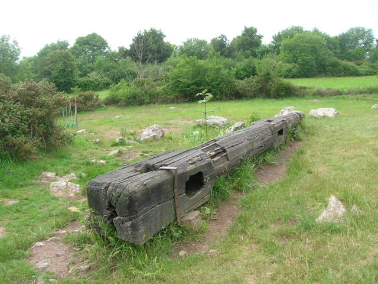
L'arbre exposé en 2006 est toujours là et devrait tenir quelques années !

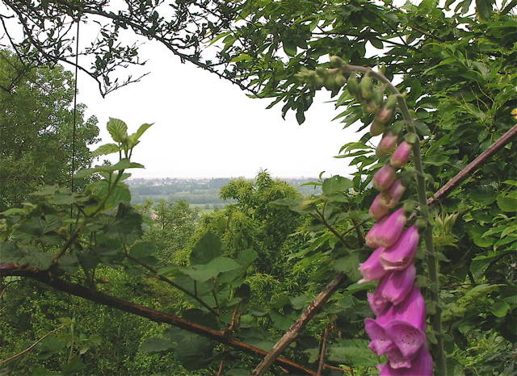
Les plantes ont poussé, mais on peut voir la côte à proximité d'Hirel, un avant-goût du festival !

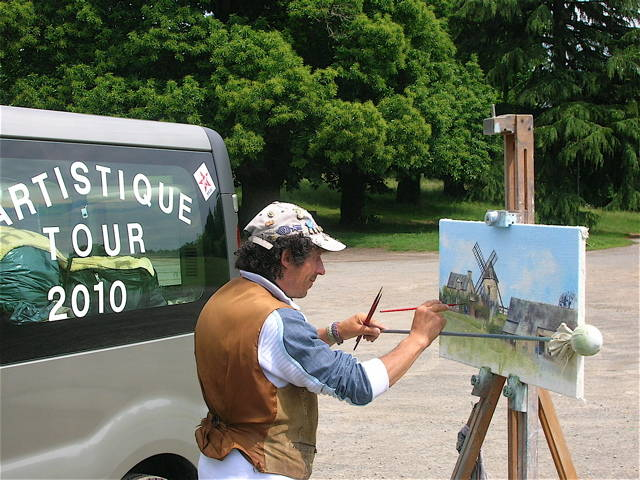
Un peintre, qui a immortalisé son entreprise sous le nom de "Artistique Tour 2010", produit en série des tableaux du paysage, un peu amélioré...

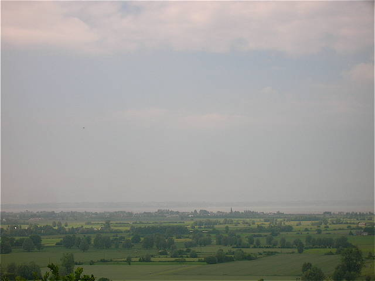
Vers la droite, la vue est lointaine, jusqu'aux côtes du Cotentin...

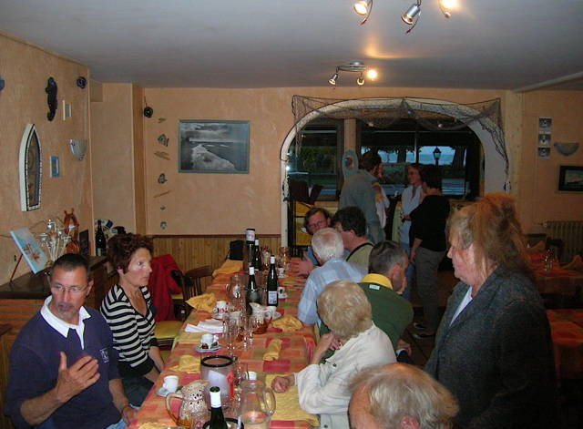
Je ferai un peu voler ma grue 2 dans l'après-midi après un coup de main pour l'aménagement du barnum, des tables et bancs, etc... Et le soir, dîner à l'hôtel-restaurant voisin...

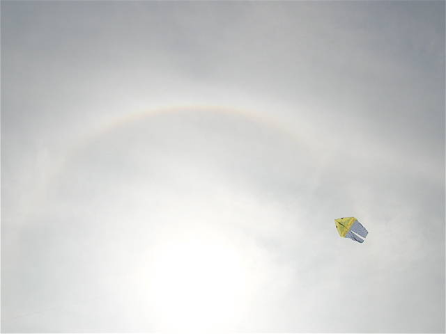
Samedi matin, beau temps, petit vent. Papy Girard fait voler son Mont-St-Michel, sous le halo du soleil dans les cirrus, nuages de glace et non d'eau !

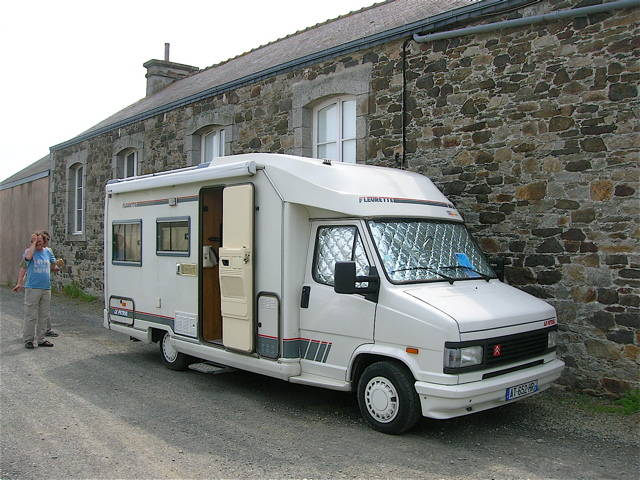
Guy (de Vierzon), le seul participant qui ne soit pas du CVCF est toujours bien accueilli, d'autant qu'il fait un pot pour fêter l'achat de son camping-car, gigantesque pour un homme seul après sa camionnette fatiguée !

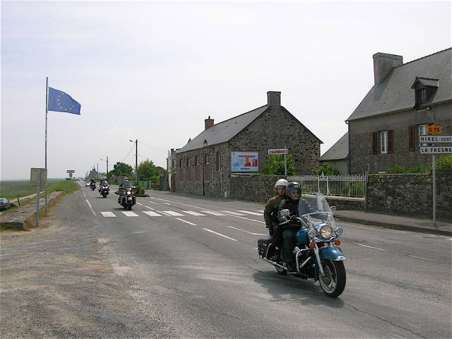
Tout au long du week-end, on verra passer quelques voitures anciennes mais surtout des hordes de motards sur des gros cubes, qui klacksonnent joyeusement pour participer à l'ambiance...

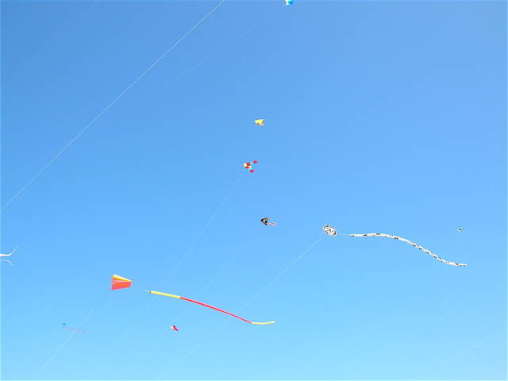
Mais on est venu pour le cerf-volant, il y en a déjà pas mal dans les azurs, Deltas, Pétillons, Flow-forms, et des queues !

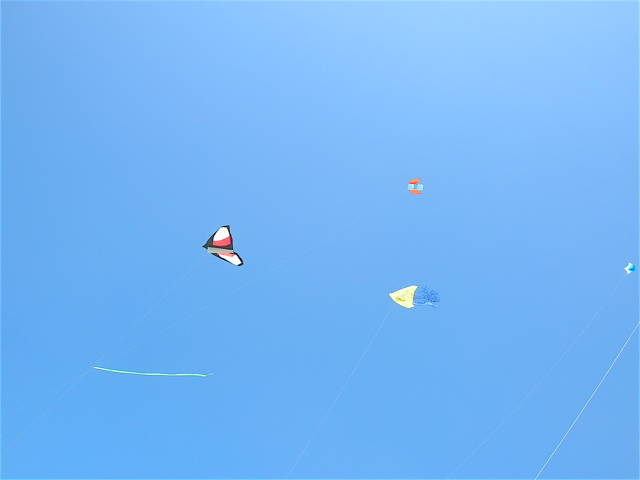
Encore des Deltas, et le Roi des Airs de Jean-Marc Bardeau !

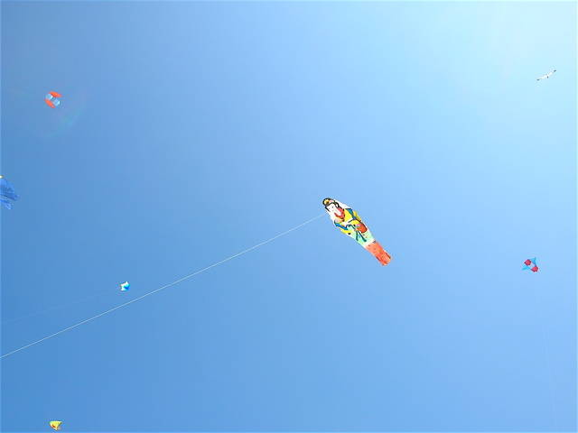
A droite, le grand Conyne de François Périault, au centre la Geisha d'Eric Stempell, à gauche le Jessica du grand Patrick...

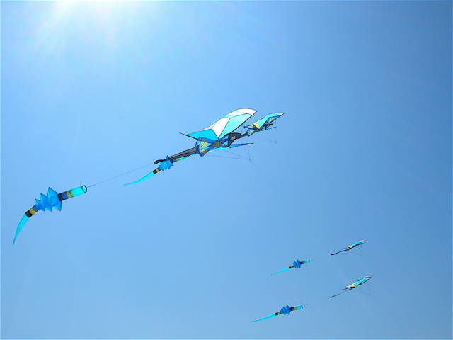
Claude Lebourgeois a monté sa panoplie de danseuses irlandaises, il est tranquille pour d'autres occupations !

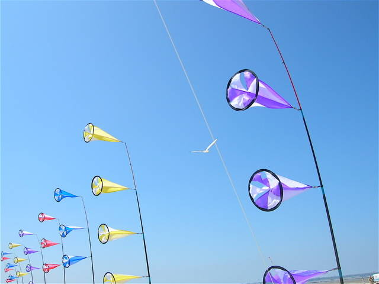
Loïc Chouaran, qui préside le CVCC et leade l'équipe d'organisation a installé ses manches spéciales, qui ne sont pas des manches puisqu'elles ne sont pas creuses ! Mais ça tourne joyeusement !

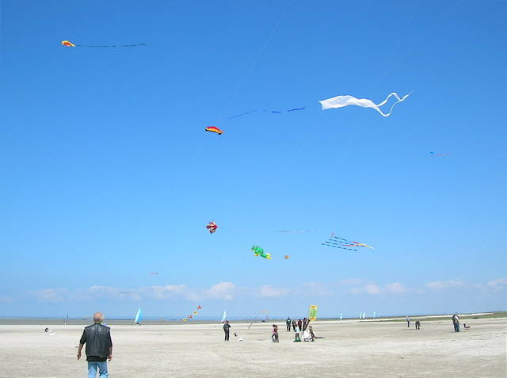
Et encore d'autres, plus classiques ou plus originaux selon les voeux de leurs auteurs...

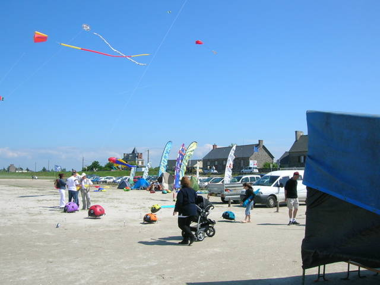
De nombreuses bannières CVCF balisent le terrain et marquent notre présence ! Au sol, Loïc a posé ses coccinelles de teintes improbables qui amusent beaucoup les enfants et les grands ! Claudine promène fièrement son petit-fils, Gaspard, je crois, félicitations !

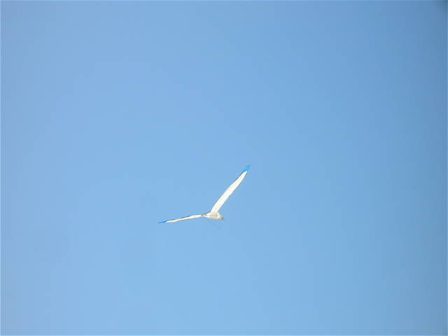
Ce matin, j'ai monté mon Albatros 1 que j'avais réparé d'une cassure à la maison. Ouais, au montage, re-cassure ! Je re-répare, je remonte, OK, je le lance, et, aussitôt, re-re-cassure... Bon, perseverare diabolicum, alors je monte l'Albatros 2 qui se défendra bien, quoiqu'un peu moins stable...

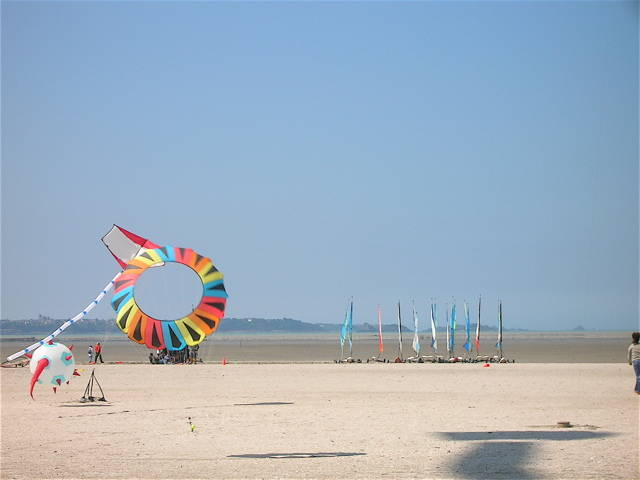
Plus loin au bord de l'estran, le club de chars à voile se déchaîne. Ils ont des chars déjà très évolués, avec le pilote allongé et une roue avant très loin devant. Mais le plus rapide sera... un petit Blow-Kart, vous savez, le truc démontable qui tient dans une valise, pour lequel son pilote a créé un carénage qui le protège des projections !

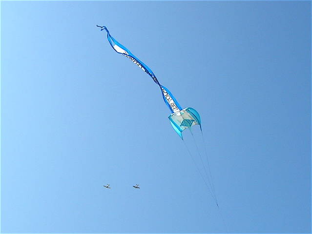
Claude a encore monté son flow-form celtique aux armes de son club... Une patrouille de 2 avions légers le survole, ça a l'air de devenir une mode, le vol en patrouille, on en voit partout !

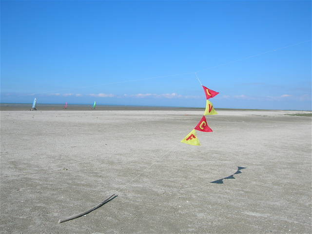
J'ai encore monté mes fanions du Club, c'est l'occasion de comparer les versions ! Les miens font 30 cm de côté, mais une dimension plus grande est beaucoup plus lisible. Si j'en fais d'autres, ils seront de 50 cm, et peut-être plus longs que larges... On vous attend...

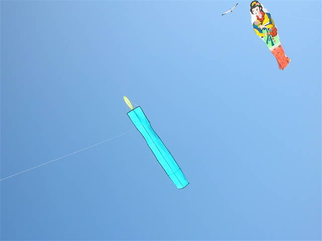
Dans le même ordre d'idées, les bougies d'anniversaire ! J'ai monté la mienne qui a volé toute la journée ! Il faut la courber un peu plus transversalement par vent fort, sinon elle se balance violemment... Et décourber par vent faible permet de regagner un peu de portance...

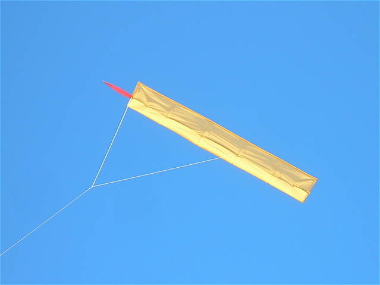
François Périault a sorti la sienne aussi. Sa flamme est dans un tissu plastifié rigide, coloré en rouge, ça simplifie la construction !

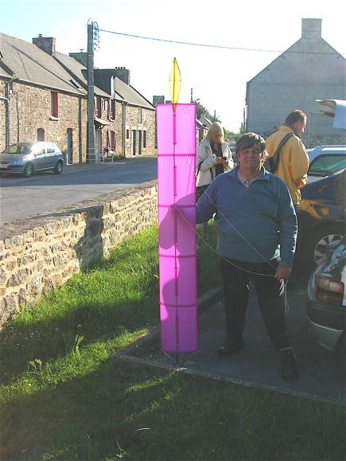
Eric, l'auteur du plan, en a aussi fait une évidemment... Il n'a pas respecté son plan, comme tout le monde, mais presque !

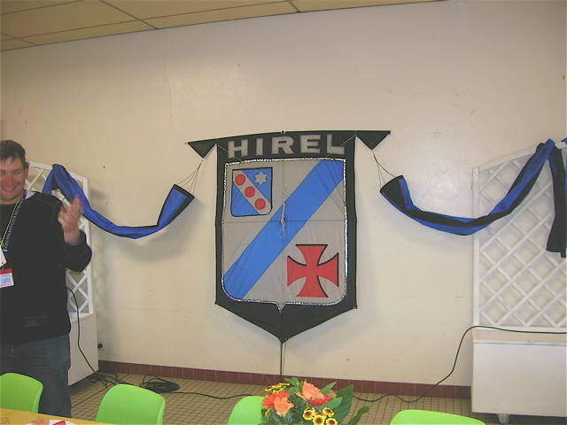
Samedi soir, grand dîner de fête à la salle polyvalente généreusement prêtée par la Mairie dont on verra quelques représentants sur le terrain... Le blason d'Hirel, généreusement réalisé et offert il y a quelques années par le CVCC, trône au mur...

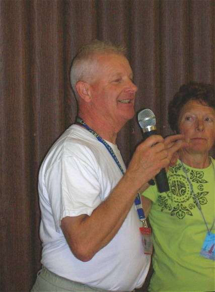
Loïc fera un discours de bienvenue extrêmement bref, merci à lui...

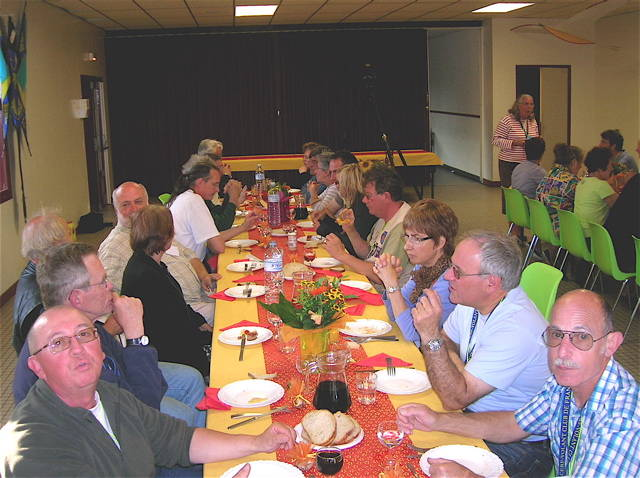
Les tables ont été splendidement dressées, avec de jolis chemins de tables ! Et nous serons servis à la place par les dévoué(e)s membres du CVCC !

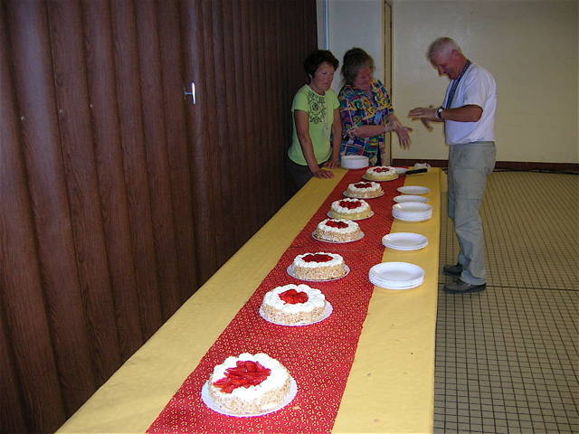
Le dessert, c'est la tarte à la crème, mais en réel ! Et il n'y aura pas de bataille ou d'entartage, c'est trop bon, on ne va pas gaspiller !

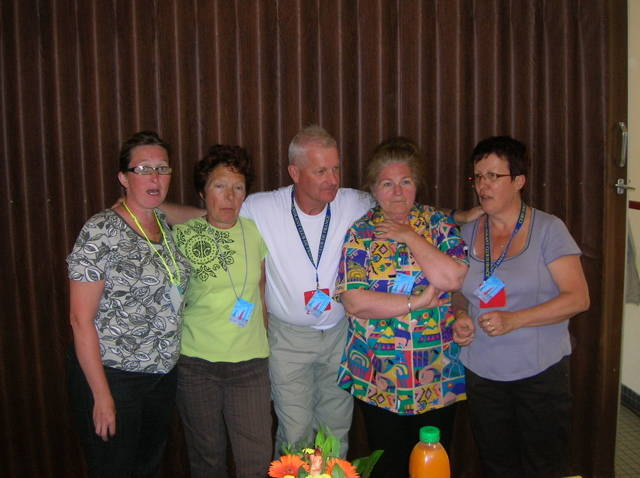
Tout le monde était content, et Loïc vient poser à la tête de son harem pour finir !

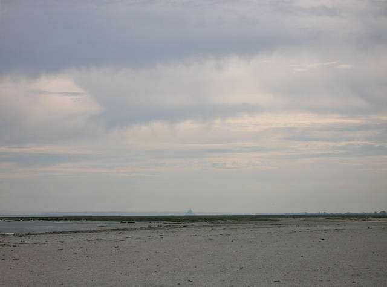
Dimanche matin, on voit le Mont au loin. Les prédictions se confirment, le temps est plus couvert qu'hier, mais quand même très supportable, frais pour un mois de juin, cependant...

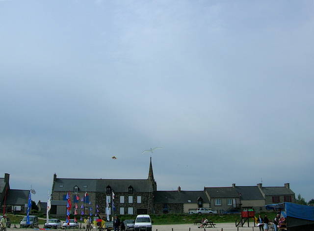
Vent léger, Christian Bécot a sorti son Delta. Et moi, après un essai de grue, mon Spiralier, plus léger... Il a l'air posé sur le clocher, mais ne vous en faites pas, il est plus près...

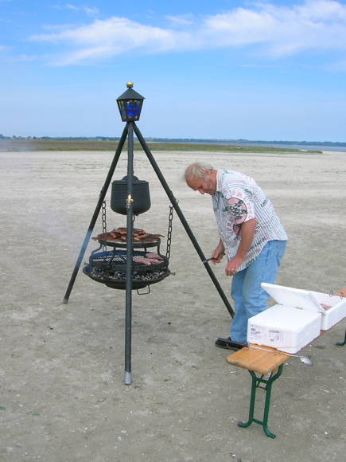
Dès 11 h, Claude a monté son pittoresque barbecue d'escouade et commence à griller les saucisses, qu'il met ensuite au chaud à l'étage supérieur, voire dans la marmite...

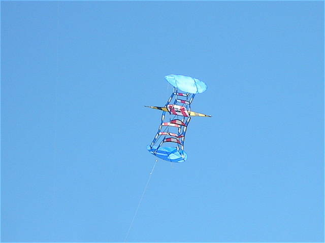
Mais on a le temps de voler encore un peu. Loïk Lamalle a plusieurs Balises en l'air et pas trop de queues car la brise est limitée ! Elle se renforcera l'après-midi...

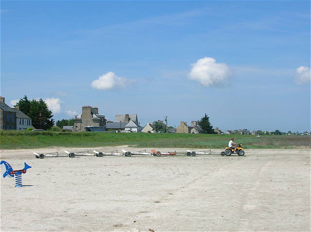
Les chars arrivent en petit train, qui suit bien le Quad dans les circonvolutions à parcourir pour arriver sur la plage ! Les relations avec eux seront très bonnes...

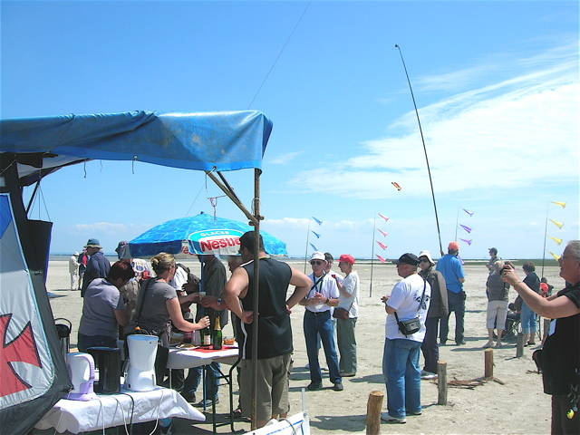
Bon, toutes les saucisses sont cuites, il faut penser à l'apéritif, le soleil est de la partie, mais on a trouvé un parasol... Jean-Daniel Chantelauze fait de la photo aérienne... à la perche !

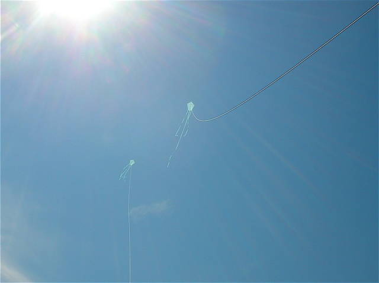
Après le déjeuner, Eric Stempell essaye le nouveau plastique qu'il a acheté. Il est un peu plus transparent que prévu, mas bien visible quand même... Allez, on le garde, c'est vrai que ça devient dur à trouver ! Eric essaye aussi une nouvelle forme de Coccinelle sans arrondis, longs à découper, même avec un gabarit. La nouvelle forme marche bien, très stable, on la baptise sur-le-champ "la Lanterne" !

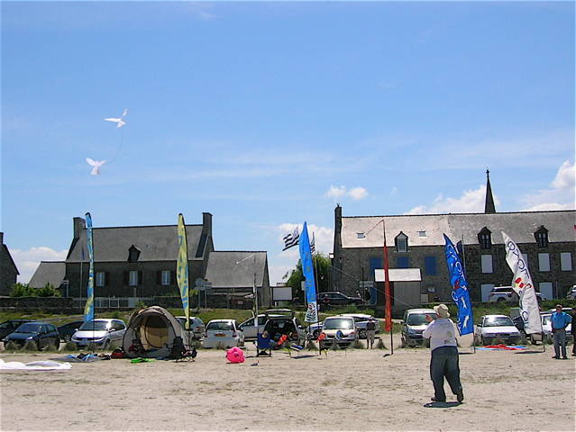
Philippe Burger est un grand constructeur. Il a refait à partir de quelques photos les colombes de Karl Longbottom, et elles battent des ailes aussi réalistement que les originales !

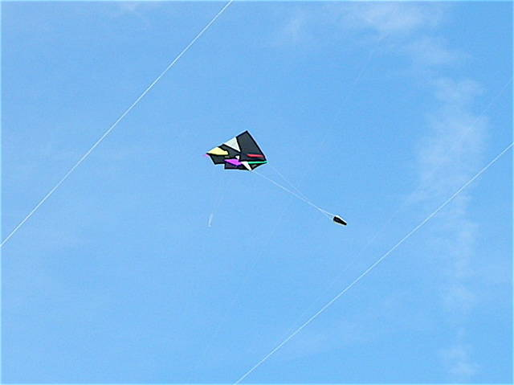
J'ai noté encore ce beau Flare très coloré que je ne connaissais pas...

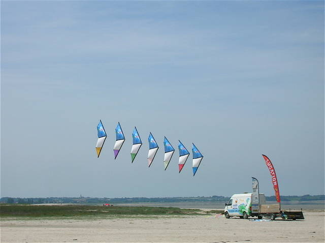
Loïc Chouaran se change un peu les idées de l'organisation avec ce train de 7 pilotables bleu+blanc+couleur. Ca tire quand même pas mal, et il doit cramponner dans le sable dur...

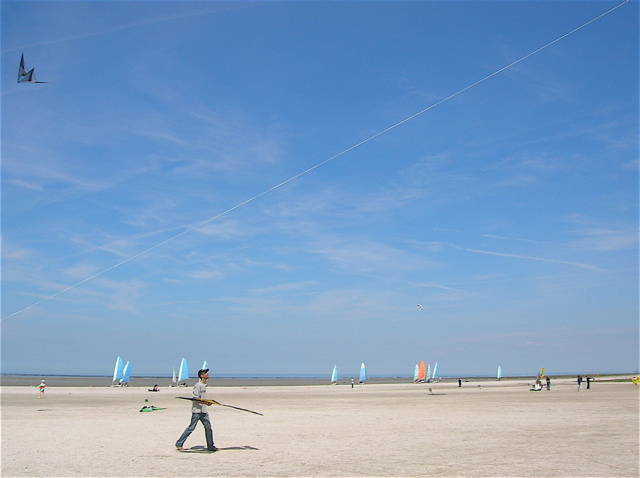
On a aussi vu ce jeune homme, un local sans doute, venu avec son Révo ventilé et qui a joué avec le public une bonne partie de la journée mais a mangé tout seul dans son coin...

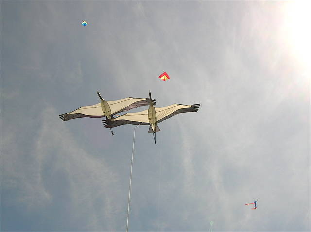
Cet après-midi, j'ai fait voler mes deux grues séparément, et comme elles marchaient bien, avec un bon petit vent moyen et calme, j'ai essayé un vol de groupe en les attachant ensemble. Un peu bricolé, mais ça a tenu l'air quelques dizaines de secondes, assez pour prouver la faisabilité... et prendre la photo !

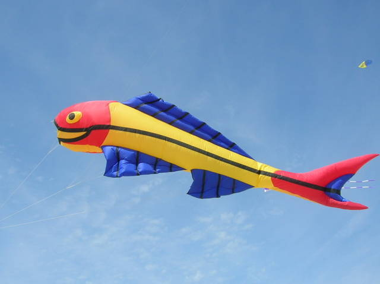
Jean-Marc a encore fait voler le poisson de Philippe Burger (3 ou 4 m), copié aussi sur un modèle allemand (je crois) ! Il vole seul, il faut rester au bout du fil pour le maintenir, mais il n'est pas dangereux s'il tombe...

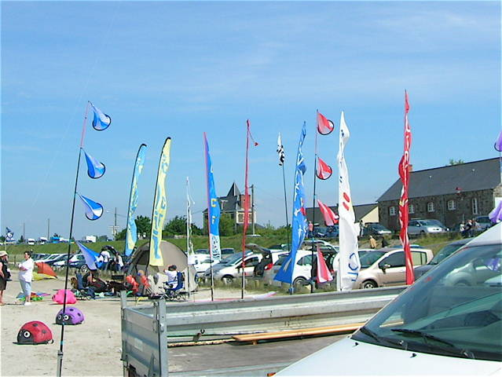
Les bannières du CVCF sont restées là en permanence, sauf quand l'une s'est envolée de sa canne et a été retrouvée après recherche... pliée dans la remorque d'un touriste "qui l'aurait rapportée", bien sûr... surtout si on l'avait pris sur le fait ! Philippe a dû aussi courir après une dame qui partait tranquillement avec un poisson issu d'un banc bien planté...

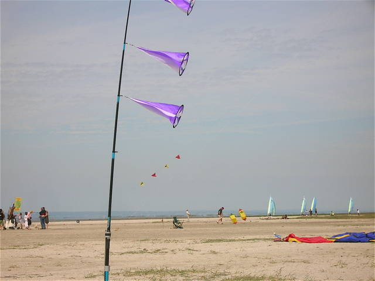
Encore un jeu de fanions, de 50 cm ceux-là, ça n'est pas disproportionné ! J'ai vu aussi une variante sur une canne rigide... A travailler, toutes les variantes sont bienvenues si on respecte le plan triangulaire et les couleurs rouge et jaune du CVCF...

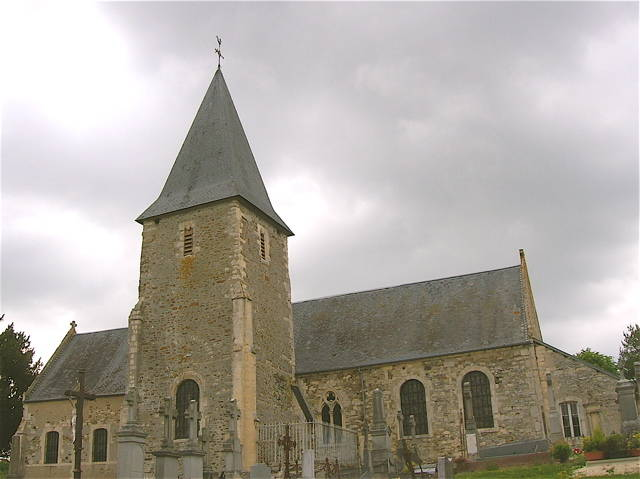
Pour finir, j'ai fait un peu de route et comme je sens que vous vous languissez de mes photos d'églises, voici celle au pied de laquelle j'ai dormi, à Longvillers !
Hirel 2010, fête des 33 ans du CVCF : La plage est parfaite, bien que le sable ne soit pas trop fait pour les baigneurs ! Mais pour les cervolistes, c'est bien ! L'organisation est parfaite, avec une restauration très complète et tout ce qu'il faut à proximité. Ce serait encore mieux si plus de CVCFistes se déplaçaient pour soutenir leur club et se rencontrer, mais il est vrai que les campings-cars ne sont pas autorisés à stationner sur place. Pourtant il paraît que pour une fête la semaine d'avant, le parking en était plein ! Ils n'avaient sans doute pas demandé l'autorisation...